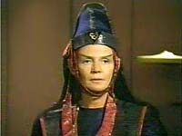
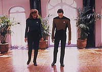
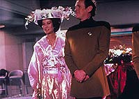
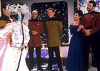
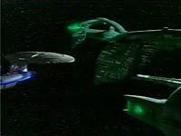

|
MANCHETE
DO EPISÓDIO
Cotidiano
de Data enriquece ainda mais
um
dos mais ricos personagens da série
Episódio
anterior | Próximo
episódio
Sinopse:
Data Estelar: 44390.1.
A compreensão de Data do comportamento humano é colocada em teste
quando sua amiga Keiko Ishikawa resolve desistir de casar com seu
noivo O'Brien. Porém a discordância é resolvida e para
preparar-se para a cerimônia, Data decide ter aulas de dança com a
Dra. Crusher (conhecida no passado como "a doutora dançarina").
 Enquanto
isso, uma embaixadora Vulcana chega a bordo da Enterprise para
liderar negociações secretas com os Romulanos. Ao ser transportada
para a nave inimiga, um defeito no transporte faz com que ela seja
morta.
Saindo da Zona Neutra, Data descobre que a embaixadora não foi
morta, e que a suposta falha do transporte foi causada pelos
Romulanos.
De volta à Zona Neutra, Picard é confrontado por duas
aves-de-guerra Romulanas. Ao perguntar pela embaixadora, os
Romulanos revelam que na verdade ela não passava de uma espiã
infiltrada na Federação. Para evitar um incidente ainda mais
grave, Picard abandona a Zona Neutra.
Este episódio retrata um dia inteiro da vida de Data, desde o
momento em que o dia começa a bordo da Enterprise, até ele assumir
a ponte no turno da madrugada.
Comentários:
 "Data's
Day" é o melhor insight na vida cotidiana de Data de que já
se tem notícia. Embora vários outros episódios já tivessem
conseguido mostrar algumas facetas interessantes da psique do andróide
--como "The Measure of a Man"
e "The Offspring"-- nenhum consegue dar uma noção
do que é o dia-a-dia para o personagem a bordo da Enterprise.
O formato escolhido para contar a história é perfeito: nada melhor
que conhecer o cotidiano de alguém a partir de sua própria
narrativa. Ainda mais se for alguém que não costuma ter processos
racionais semelhantes aos nossos, como é o caso de Data.
O tom cômico do episódio em nada prejudica a seriedade da história
--que envolve um caso de espionagem Romulana-- e tampouco detrata o
personagem em foco.
 Costuma-se
dizer que um personagem está indo bem quando a audiência ri com
ele, e não dele. Com Data, a coisa não funciona bem assim. Em
geral, o público acaba rindo de situações produzidas pela
ingenuidade quase infantil do personagem.
Entretanto, o que seria a desgraça para qualquer outro é um ponto
de força para Data. Embora o público ria de suas atitudes pouco
apropriadas, produzidas em razão de suas dificuldades para entender
os humanos, aquilo emana com tal força do personagem que não se
pode deixar de admirar o andróide por sua visão ingênua, mas por
isso mesmo, muito mais límpida e fascinante.
 Além
de admirarmos Data pelo que ele é, o personagem cumpre seu papel na
série como um verdadeiro espelho da natureza humana. É muito
curioso ver como ele desenvolve raciocínios impecáveis --como o de
que O'Brien ficaria contente pela decisão de Keiko de cancelar o
casamento-- que na prática simplesmente não funcionam.
O ser humano é cheio de contradições e é isso que percebemos
quando olhamos para Data.
Mesmo tirando esse lado "cabeça" do episódio, ainda
sobra o puro entretenimento. Várias cenas são de matar de rir,
como as lições de dança de Data
ou ainda suas tentativas frustradas de reproduzir a linguagem humana
(xingando Geordi na barbearia) ou reconciliar o casal que ele ajudou
a formar.
Por fim, a trama com os Romulanos apresenta um interesse para manter
o público na cadeira durante uma hora inteira, sem encarar o episódio
como obra de uma "sitcom" (comédia de situação, nome
dado às séries humorísticas de meia hora de duração).
 Só
não dá para entender como é possível a Federação descobrir que
houve um espião Romulano sob suas barbas e nada mais acontecer a
respeito. É o tipo de resposta que poderia (ou até deveria)
aparecer em um episódio seguinte, mas em razão da natureza episódica
da série (cada história está contida em si mesma, não exigindo
do telespectador acompanhar todos os episódios para entender um
determinado segmento), o incidente acabou esquecido.
Citações:
Data - "I have
good news. Keiko has a made a decision designed to increase her
happiness. She has cancelled the wedding."
("Tenho boas notícias. Keiko tomou uma decisão para aumentar
a felicidade dela. Ela cancelou o casamento.")
Beverly - "They don't do a lot of tap dancing at weddings."
("Não se costuma sapatear em casamentos.")
Trivia:
 Este episódio se passa no 1.550º dia desde que a Enterprise foi
comissionada em 4 de outubro de 2363, data estelar 40759.5.
Este episódio se passa no 1.550º dia desde que a Enterprise foi
comissionada em 4 de outubro de 2363, data estelar 40759.5.
Pela
primeira vez vemos a gata de Data, Spot (o sexo do animal foi
definido no episódio do 7º ano "Genesis", quando
Spot teve filhotes).
As
palavras que Picard diz na cerimônia do casamento de O'Brien e
Keiko são as mesmas ditas pelo capitão Kirk, em um casamento de
oficiais ocorrido no episódio "Balance
of Terror".
Segundo
Ron Moore, um dos roteiristas deste episódio, o quasar Murasaki
mencionado aqui é o mesmo Murasaki 312 do episódio da Série Clássica
"The Galileo Seven".
O
cabeleleiro Boliano deste episódio é apenas um de muitos que irão
aparecer na série de agora em diante.
A
nave USS Zhukov, que trouxe a embaixatriz Vulcana até a Enterprise,
é a nave em que o tenente Reg Barclay ("Hollow Pursuits")
serviu antes de ser transferido para a Enterprise.
O
ator Alan Scarfe (que é casado com Barbara March, que interpreta
Lursa, uma das irmãs do Klingon Duras) retornaria como o comandante
de um campo de concentração Romulano em "Birthright, Part
II", do sexto ano da série. Ele também participaria de Voyager,
no episódio da segunda temporada "Resistance". Em "Data's
Day" ele interpreta o Romulano Mendak.
Ficha
técnica:
História de Harold Apter
Roteiro de Harold Apter e Ronald D. Moore
Direção de Robert Wiemer
Exibido em 07/01/1991
Produção: 085
Elenco:
Patrick Stewart como
Jean-Luc Picard
Jonathan Frakes como William Thomas Riker
Brent Spiner como Data
LeVar Burton como Geordi La Forge
Michael Dorn como Worf
Gates McFadden como Beverly Crusher
Marina Sirtis como Deanna Troi
Elenco convidado:
Rosalind Chao como
Keiko Ishikawa
Colm Meaney como Miles O'Brien
Sierra Pecheur como a embaixadora T'Pel
Alan Scarfe como almirante Mendak
April Grace como Hubbell
Shelly Desai como V'Sal
Episódio
anterior | Próximo
episódio
|